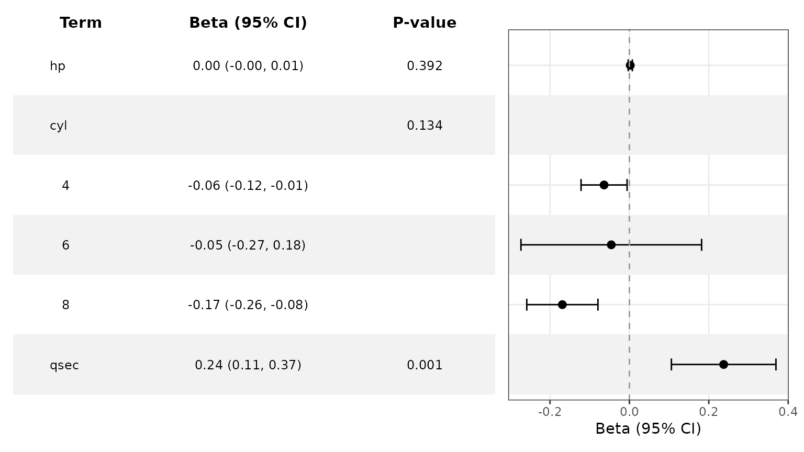
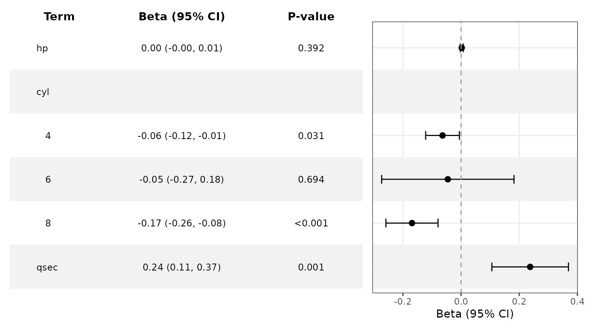

Prepare Forest Data with Helper Functions
Source:vignettes/ggforestplotR-data-helpers.Rmd
ggforestplotR-data-helpers.RmdThis short article covers the forest_data interchange
object and the helper functions that prepare it before a plot is
drawn.
Use as_forest_data() to standardize a coefficient
table
as_forest_data() converts your column names into the
internal structure used by ggforestplotR. The result is a
forest_data data-frame subclass containing the columns
expected by ggforestplot(),
add_forest_table(), and add_split_table().
raw_coefs <- data.frame(
variable = c("Age", "BMI", "Treatment"),
beta = c(0.10, -0.08, 0.34),
lower = c(0.02, -0.16, 0.12),
upper = c(0.18, 0.00, 0.56),
display = c("Age", "BMI", "Treatment"),
section = c("Clinical", "Clinical", "Treatment"),
sample_size = c(120, 115, 98),
p_value = c(0.04, 0.15, 0.001)
)
forest_ready <- as_forest_data(
data = raw_coefs,
term = "variable",
estimate = "beta",
conf.low = "lower",
conf.high = "upper",
label = "display",
grouping = "section",
n = "sample_size",
p.value = "p_value",
estimate_scale = "identity",
effect_label = "Beta",
conf.level = 0.95
)Use forest_metadata() to inspect the semantic and
provenance contract. The complete fitted model and a duplicate copy of
the source data are not retained.
forest_metadata(forest_ready)[c(
"estimate_scale", "axis_transform", "effect_label", "conf_level",
"reference_value", "source_model", "source_package", "source_columns"
)]
#> $estimate_scale
#> [1] "identity"
#>
#> $axis_transform
#> [1] "identity"
#>
#> $effect_label
#> [1] "Beta"
#>
#> $conf_level
#> [1] 0.95
#>
#> $reference_value
#> [1] 0
#>
#> $source_model
#> NULL
#>
#> $source_package
#> NULL
#>
#> $source_columns
#> variable beta lower upper display
#> "variable" "beta" "lower" "upper" "display"
#> section sample_size p_value
#> "section" "sample_size" "p_value"Once the data are standardized, you can pass them straight into
ggforestplot().
ggforestplot(forest_ready)
Use as_forest_data() for model objects
If broom is available, the model-specific
as_forest_data() method pulls coefficient estimates and
confidence limits from a fitted model. The method also assigns model
semantics such as Beta, OR, or
HR.
fit <- lm(mpg ~ wt + hp + qsec, data = mtcars)
model_ready <- as_forest_data(fit)The returned object can be passed directly into
ggforestplot().
ggforestplot(model_ready)
tidy_forest_model() remains available as a compatibility
wrapper and returns the same forest_data object.
Derive subgroup effects from an interaction model
For a fitted model with one continuous-by-factor interaction,
subgroup = "auto" identifies the factor from model metadata
and estimates the focal variable’s average slope within each observed
factor level.
interaction_fit <- lm(wt ~ hp + mpg * factor(cyl) + qsec, data = mtcars)
subgroup_ready <- tidy_forest_model(
interaction_fit,
subgroup = "auto",
focal = "mpg"
)
as.data.frame(subgroup_ready)[, c(
"term", "subgroup", "estimate", "conf.low", "conf.high", "p.value"
)]
#> term subgroup estimate conf.low conf.high p.value
#> 1 hp <NA> 0.002211858 -0.003019553 0.007443269 0.391515516
#> 2 4 cyl -0.063790596 -0.121755535 -0.005825657 0.133731900
#> 3 6 cyl -0.045622115 -0.273154167 0.181909936 0.133731900
#> 4 8 cyl -0.168851554 -0.258483642 -0.079219466 0.133731900
#> 5 qsec <NA> 0.237491332 0.105815640 0.369167024 0.001059097
ggforestplot(subgroup_ready, striped_rows = TRUE) +
add_forest_table(columns = c("term", "estimate", "p"))
These rows are average mpg slopes within the
cyl levels. They come from
marginaleffects::avg_slopes() using the original model and
its covariance matrix. No subgroup-specific models are refitted. The
focal main effect, factor main-effect coefficients, and raw interaction
coefficients are replaced by the derived block; unrelated coefficients
remain standalone in formula order.
The same interaction can be selected explicitly:
tidy_forest_model(
interaction_fit,
subgroup = "cyl",
focal = "mpg"
)
#> <forest_data> Beta; scale: identity; reference: 0
#> term estimate conf.low conf.high label group subgroup grouping
#> 1 hp 0.002211858 -0.003019553 0.007443269 hp <NA> <NA> <NA>
#> 2 4 -0.063790596 -0.121755535 -0.005825657 4 <NA> cyl <NA>
#> 3 6 -0.045622115 -0.273154167 0.181909936 6 <NA> cyl <NA>
#> 4 8 -0.168851554 -0.258483642 -0.079219466 8 <NA> cyl <NA>
#> 5 qsec 0.237491332 0.105815640 0.369167024 qsec <NA> <NA> <NA>
#> separate_groups n events p.value std.error statistic df
#> 1 <NA> <NA> <NA> 0.391515516 0.002534723 0.8726232 NA
#> 2 <NA> <NA> <NA> 0.133731900 0.029574492 -2.1569465 NA
#> 3 <NA> <NA> <NA> 0.133731900 0.116089915 -0.3929895 NA
#> 4 <NA> <NA> <NA> 0.133731900 0.045731497 -3.6922376 NA
#> 5 <NA> <NA> <NA> 0.001059097 0.063799498 3.7224640 NA
#> subgroup_level focal model_term contrast estimand effect_scale
#> 1 <NA> <NA> <NA> <NA> <NA> <NA>
#> 2 4 mpg mpg:factor(cyl) dY/dX average_slope identity
#> 3 6 mpg mpg:factor(cyl) dY/dX average_slope identity
#> 4 8 mpg mpg:factor(cyl) dY/dX average_slope identity
#> 5 <NA> <NA> <NA> <NA> <NA> <NA>Automatic selection currently requires exactly one unambiguous
continuous-by-factor interaction. Factor-by-factor effects require
explicit predictor names and use
marginaleffects::avg_comparisons(). Continuous subgroups,
transformed focal terms, multiple selected interactions, and three-way
interactions are rejected. Logistic and Cox effects are calculated on
their model scale and shown as odds ratios and hazard ratios by default,
not as marginal probabilities or survival probabilities.
The canonical p.value combines two compatible display
roles: ordinary covariates retain their coefficient p-values, while
every derived subgroup block receives an omnibus Wald test of the
selected interaction. The display layer moves that interaction p-value
to the subgroup header and leaves the individual levels blank, so one
table column can present both kinds of tests.
Use p_method = "level" when the subgroup-specific slope
or comparison tests are the quantities that should appear beside the
individual estimates:
level_p_ready <- tidy_forest_model(
interaction_fit,
subgroup = "auto",
focal = "mpg",
p_method = "level"
)
ggforestplot(level_p_ready, striped_rows = TRUE) +
add_forest_table(columns = c("term", "estimate", "p"))
Both methods use the same canonical p.value column.
"overall" changes the test and places it on the subgroup
header; "level" retains the tests returned for the derived
effects and places them on the subgroup rows.